Radio
El radio del círculo parte desde el centro hasta la circunferencia y se pueden dibujar varios, pues siempre valdrán lo mismo.

Diámetro
El diámetro es igual a la suma de dos radios y es la medida de un extremo de la circunferencia al otro, pasando siempre por el centro del círculo. Es como partir por la mitad el círculo, en donde el diámetro sería la línea que parte al círculo.

Cuerda
Es el segmento que une dos puntos distintos de la circunferencia y no pasa por el centro.
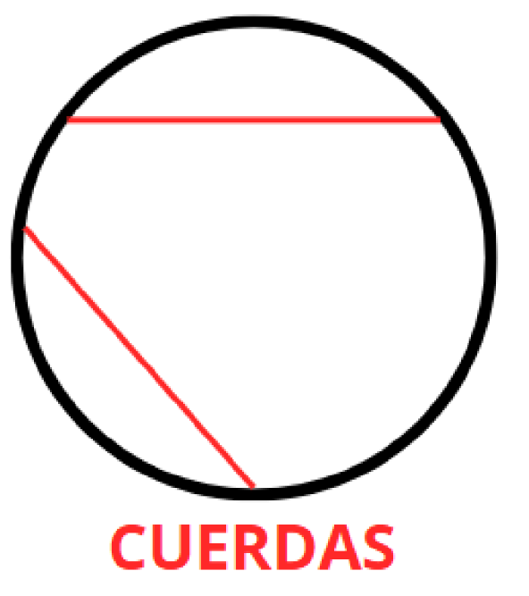Secantes
Son las rectas que corta a la circunferencia en dos puntos distintos, creando así dos partes de distinta área.
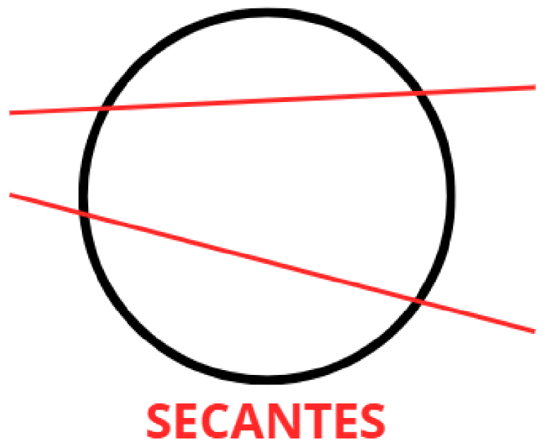Tangentes
Es la recta que interseca a la circunferencia en un punto específico y es perpendicular al radio, es decir, forma un ángulo de 90°.
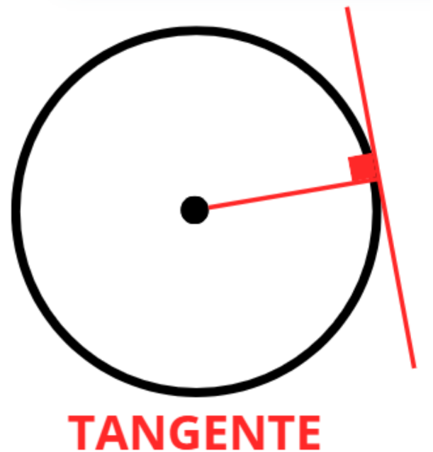Arco
Es un segmento presente en la circunferencia, tendiendo sus extremos en dos puntos distintos de la misma. Se puede medir en grados (°), siendo el total de la circunferencia 360°.
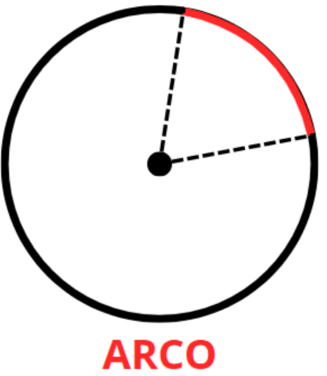Ángulo central
El ángulo central tiene su vértice en el centro del círculo y sus lados son dos radios. La medida del ángulo central es igual a la medida del arco que abarca.
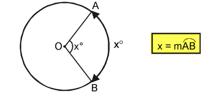Ángulo inscrito
El ángulo inscrito tiene su vértice sobre la circunferencia y sus lados son dos cuerdas que se cortan en ese punto. La medida del ángulo inscrito es la mitad del arco que abarca. Por tanto, el arco es el doble del ángulo.
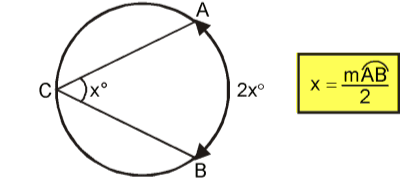Ángulo interior
El ángulo interior se forma cuando dos cuerdas o secantes se cruzan dentro del círculo, pero su vértice no está en el centro. La medida del ángulo interior es la mitad de la suma de los arcos opuestos que abarca.
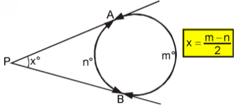Ángulo exterior
El ángulo exterior se forma cuando dos secantes o una secante y una tangente se intersectan fuera del círculo. La medida del ángulo exterior es la mitad de la diferencia de los arcos que abarca.
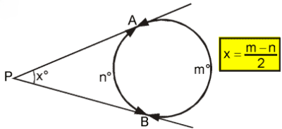1. ¿Cuál es la medida total de la circunferencia en grados?
2. ¿Qué nombre recibe la recta que toca la circunferencia en un único punto?
3. Un ángulo que nace en el centro del círculo y se forma con dos radios es:
4. Si un ángulo central mide 80°, ¿cuánto mide su arco correspondiente?
5. El arco AB mide 100°. ¿Cuánto mide un ángulo inscrito que intercepta ese mismo arco?
6. ¿Qué fórmula se usa para calcular un ángulo interior en un círculo?
7. Un ángulo exterior se obtiene de:
8. Un ángulo central intercepta un arco de 120°. ¿Cuál es la medida del ángulo central?
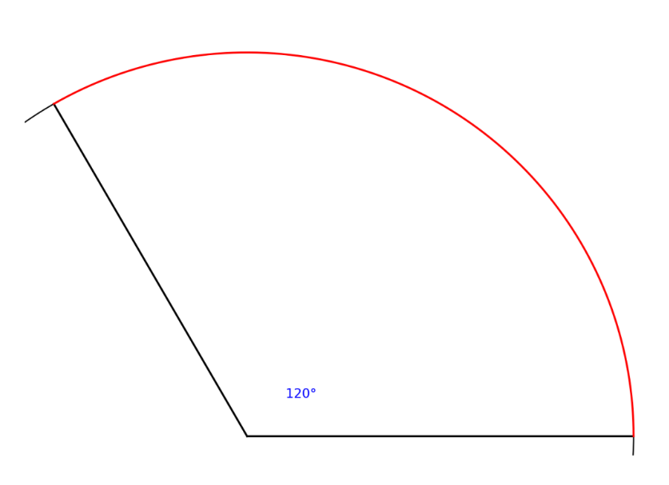
9. El ángulo inscrito CED mide 40°, ¿Cuál es el valor del arco CD y el ángulo central β?
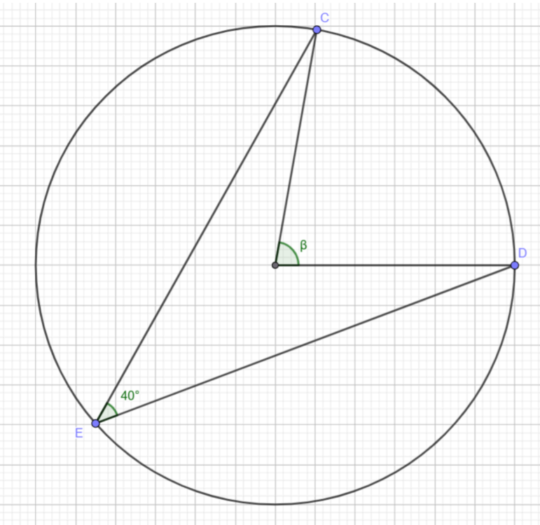
10. El arco FE mide 65° y el arco CD mide 35°, cuánto mide el ángulo α.
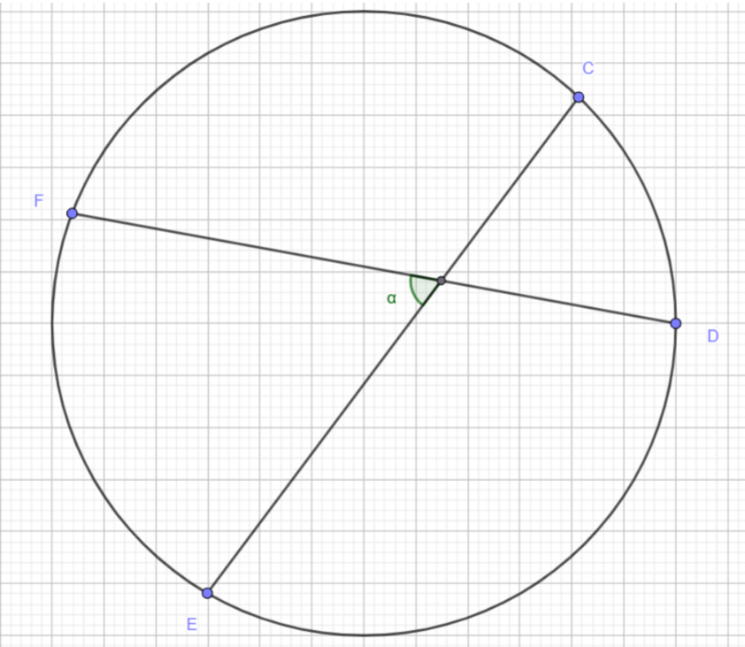
11. El arco CD mide 100° y el arco FG mide 60°, ¿Cuánto mide el ángulo α?
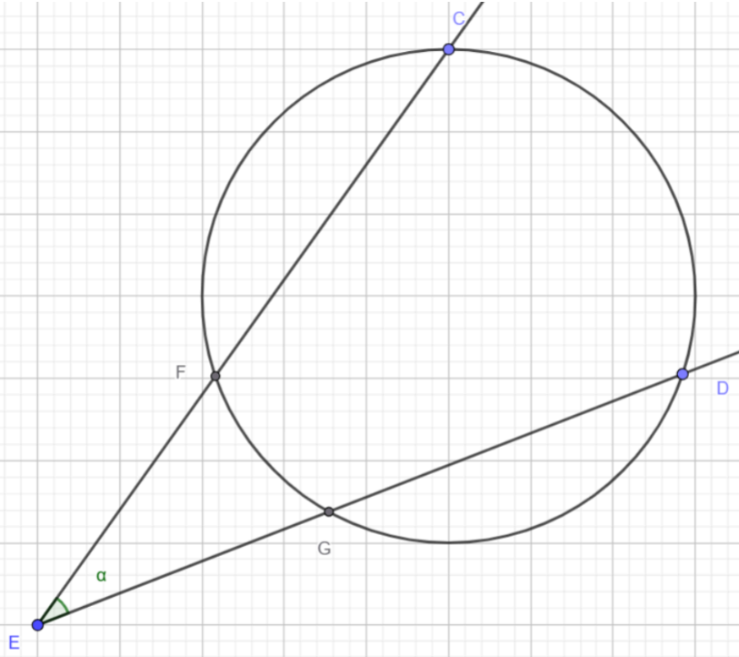
12. Si el arco CG mide 90° y el ángulo E mide 26°. ¿Cuál es la medida de FD?
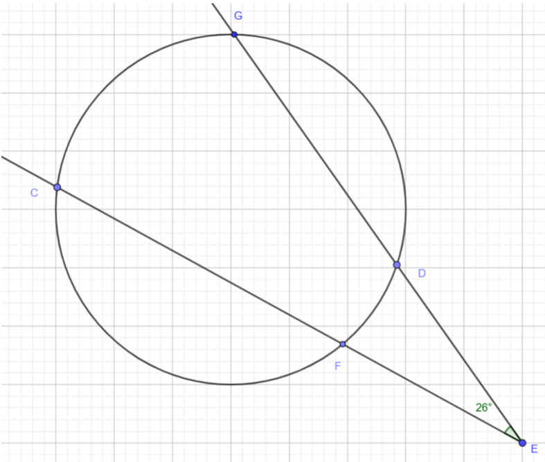